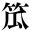

| 旧主人 | |
| 島崎 藤村 | |
| (2012) | |
旧主人
島崎藤村
一
今でこそ私もこんなに肥ってはおりますものの、その時分は瘠
ぎすな小作りな女でした。ですから、隣の大工さんの御世話で小諸
へ奉公に出ました時は、人様が十七に見て下さいました。私の生れましたのは柏木
村――はい、小諸まで一里と申しているのです。
柏木界隈
の女は佐久
の岡の上に生活
を営
てて、荒い陽気を相手にするのですから、どうでも男を助けて一生烈
しい労働
を為
なければなりません。さあ、その烈しい労働を為
るからでも有ましょう、私の叔母でも、母親
でも、強健
い捷敏
い気象です。私は十三の歳
から母親に随
いて田野
へ出ました。同じ年恰好
の娘は未だ鼻を垂して縄飛
をして遊ぶ時分に、私はもう世の中の歓
しいも哀
しいも解り始めましたのです。吾家
では子供も殖
る、小商売
には手を焼く、父親
は遊蕩
で宛
にもなりませんし、何程
男勝
りでも母親の腕一つでは遣切
れませんから、否
でも応でも私は口を預けることになりました。その頃下女の給金は衣裳
此方
持
の年に十八円位が頂上
です。然し、私は奥様のお古か何かで着せて頂いて、その外は相応な晴衣の御宛行
という約束
に願って出ました。
金銭
で頂いたら、復
た父親に呑まれはすまいか、という心配が母親の腹にありましたのです。
出るにつけても、母親は独
で気を揉
で、「旦那
様というものは奥様次第でどうにでもなる、と言っては済まないが」から、「御奉公は奥様の御機嫌
を取るのが第一だ」まで、縷々
寝物語に聞かされました。忘れもしない。母親に連れられて家
を出たのは三月の二日でした――山家
ではこの日を山替
としてあるのです。微
し風が吹いて土塵
の起
つ日でしたから、乾燥
いだ砂交りの灰色な土を踏
で、小諸をさして出掛けました。母親は新しい手拭
を冠
って麻裏穿
。私は萌黄
の地木綿の風呂敷包を提
げて随いて参りましたのです。こうして親子連で歩くということが、何故かこの日に限って恥しいような悲しいような気がしました。浅々と青く萌初
めた麦畠
の側を通りますと、丁度その畠の土と同じ顔色の農夫
が鍬
を休めて、私共を仰山らしく眺
めるのでした。北国街道は小諸へ入る広い一筋道。其処
まで来れば楽なものです。昔の宿場風の休茶屋には旅商人
の群が居りました。「唐松
」という名高い並木は伐
倒される最中で、大木の横倒
になる音や、高い枝の裂ける響や、人足の騒ぐ声は戦闘
のよう。私共は親子連の順礼と後
になり前
になりして、松葉の香を履
で通りました。
小諸の荒町から赤坂を下りて行きますと、右手に当って宏壮
な鼠色の建築物
は小学校です。その中の一棟
は建増
の最中で、高い足場の内には塔の形が見えるのでした。その構外
の石垣に添
て突当りました処が袋町
です。それはだらだら下りの坂になった町で、浅間の方から流れて来る河の支流
が浅く町中を通っております。この支流
を前に控えて、土塀
から柿の枝の垂下っている家が、私共の尋ねて参りました荒井様でした。見付
は小諸風の門構でも、内へ入れば新しい格子作
で、二階建の閑静な御住居
でした。
丁度、旦那様の御留守、母親
は奥様にばかり御目に懸
ったのです。奥様は未だ御若くって、大
な丸髷
に結って、桃色の髪飾
を掛た御方でした。物腰のしおらしい、背のすらりとした、黒目勝の、粧
れば粧るほど見勝
りのしそうな御容貌
。地の御生
でないということは美しい御言葉で知れました。奥様の白い手に見比べると、母親のは骨太な上に日に焼けて、男の手かと思われる位。
「奥様、これは御恥しい品
でごわすが、ほんの御印ばかりに」
と母親は手土産
を出して、炉辺
に置きました。
「あれ、そんな心配をしておくれだと......それじゃ反
て御気毒ですねえ」
「否
、どう致しやして。家で造
えやした味噌漬
で、召上られるような品
じゃごわせんが」
「それは何よりなものを――まあ、御茶一つお上り」
「もう何卒
御構いなすって下さいますな」
「よくまあ、それでも早く来てくれましたねえ。あの、何ですか。名は何と言いますの」
「はい、お定と申しやす。実
に不調法者でごわして。何卒
まあ何分宜
しく御願申しやす」
私はつんつるてんの綿入に紺足袋穿
という体裁
で、奥様に見られるのが何より気恥しゅう御座
ました。御傍へ添
れば心持の好い香水が顔へ匂いかかる位、見るものも聞くものも私には新しく思われたのです。御奉公の御約束も纏
りました。母親は華麗
な御暮
や美しい御言葉の裡
に私を独
残して置いて、柏木へ帰って了
いました。
御本宅は丸茂
という暖簾
を懸
た塩問屋、これは旦那様の御兄様
で、私の上りました御家は新宅と申しました。御本宅は大勢様、奉公人も十人の上遣
っておりましたが、新宅は旦那様に奥様、奉公人といえば爺
さんが一人と、其処へ私が参りましたから、合せて四人暮。御本宅は旧気質
の土地風。新宅は又た東京風。家の構造
を見比べても解るのです。旦那様は小諸へ東京を植えるという開けた思想
を御持ちなすった御方で、御服装
も、御言葉も、旧弊は一切御廃し。それを御本家では平素
憎悪
んでいるということでした。
まあ、聞いて下さい。世には妙な容貌
の人もあればあるもので、泣いている時ですら見たところは笑っているとしか思われないものがあります。旦那様のが丁度それで、眼の周囲
の筋の縮んだ工合から口元と頰
の間に深い皺
のある御様子は、全く旦那様の御顔を見ると笑が刻んであるようでした。さ、その御顔です。一時
も油断をなさらない真面目
な精神
の旦那様が、こうした御顔でいらっしゃるということは、不思議なようでした。然し、それが旦那様の御人
の好
という証拠で、御天性
の普通
の人とは違ったところでしょう。一体、寒い国の殿方には遅鈍
した無精な癖があるものですけれど、旦那様にはそれがありません。克
もああ身体
が動くと思われる位に、勤勉
な働好
な御方でした。
小諸で新しい事業
とか相談とか言えば、誰は差置ても先
ず荒井様という声が懸る。小諸に旦那様ほどの役者はないと言いました位です。
私が上りました頃の御夫婦仲というものは、外目
にも羨
ましいほどの御睦
じさ。旦那様は朝早く御散歩をなさるか、御二階で御調物
をなさるかで、朝飯前には小原の牝牛
の乳を召上る。九時には帽子を冠って、前垂掛で銀行へ御出掛
になる。御休暇
の日には御客様を下座敷へ通して、御談話
でした。尋ねて来る御客様は町会議員、大地主、商家
の旦那、新聞屋、いずれも土地の御歴々です。御晩食
の後は奥様と御対座
、それは一日のうちでも一番楽しい時で、笑いさざめく御声が御部屋から泄
れて、耳を嬲
るように炉辺までも聞える位でした。その時は珈琲
か茶を上げました。
思えば結構尽
の御暮です。私は洋燈
の下で雑巾
を刺し初めると、柏木のことが眼前
に浮いて来て、毎晩癖のようになりました。吾等
の賤
しい生涯
では、農事
が多忙
しくなると朝も暗いうちに起きて、燈火
を点
けて朝食
を済ます。東の空が白々となれば田野
へ出て、一日働くと女の身体は綿のようです。ある時、私は母親
と一緒に疲れきって、草の上に転んでいると、急に白雨
が落ちて来た、二人とも起上る力がないのです。汗臭い身体を雨に打たれながら倒れたままで寝ていたことも有ました。その時に後で烈
い熱病を煩
って死ぬ程の苦
をいたしました。農家の女の労苦
はどれ程でしょう――麦刈――田の草取、それから思えば荒井様の御奉公は楽すぎて、毎日遊んで暮すようなものでした。野獣
のように土だらけな足をして谷間
を馳歩
いた私が、結構な畳の上では居睡
も出ました位です。
何一つ御不足ということが旦那様と奥様の間
には有ません。唯御似合なさらないのは御年です。ある日のこと、下座敷へ御客様が集りました。旦那様は細
い活版刷の紙を披
げて御覧なさる、皆さんが無遠慮な方ばかりです。「こりゃ甚
い、まるで読めない」と旦那様はその紙を投出しました。
「成程、御若い方の読むんで、吾儕
の相手になるものじゃありません。ここの処なざあ、細い線
のようです」
と言いながら、一人の御客様は袂
から銀縁の大きな眼鏡を取出しました。玉の塵
を襦袢
の袖口
で拭いて、釣針
のように尖
った鼻の上に載せて見て、
「これなら私にも、明瞭
とはいきませんけれど......どうかこうか見えます」
「へえ、一寸
その眼鏡を拝借」と他の御客様が笑いながら受取て、「成程、むむ、これなら明瞭します」
旦那様も笑って反
りかえりました。やがて、瞬
をしたり、眼を摩
って見たりして、眼鏡を借りようとはなさいません。
「まあ、眼鏡はもう二三年懸けない積
です。懸けた方が目の為には好
と言いますけれど」
「ですから、私なざア何か読む時だけ懸けるんです」と眼鏡を出した方は仔細
らしく。
「驚きましたねえ」とその隣の方が引取って、
「こんなに能
く見えるのかなア。ハハハハ、こりゃ眼鏡を一つ奢
るかな」
終
には旦那様も釣込れて、
「拝借」と手を御出しなさいました。
一人の御客様が笑いながら渡しますと、旦那様も面白そうに鼻の上へ載せて、活版刷の紙を遠く離したり近く寄せたりして御覧でした。
「懸けた工合は......どうですな」と渡した方が旦那様の御顔を覘
くようにして尋ねる。
「や、こりゃ能く見える。これを懸ければすっかり読めます」
「ハハハハハ、酷
いものですなア」
「ハハハハハ」
と旦那様も手を拍
って大笑い、一人の御客様は目から涙を流しながら、腹を抱
えて笑いました。終
には皆さんが泣くような声を御出しなさると、尖った鼻の御客様は頭を擁
えて、御座敷から逃出しましたのです。
私も旦那様がこれ程であろうとは思いませんでした。人程見かけに帰
らない者はありません。これから気を注
けて視
ると、黒髪
も人知れず染め、鏡を朝晩に眺
め、御召物の縞
も華美
なのを撰
り、忌言葉
は聞いたばかりで厭
な御顔をなさいました。殊
に寝起の時の御顔色は、毎
も微
し青ざめて、老衰
えた御様子が明白
と解りました。智慧
の深そうな目の御色も時によると朦朧
潤みを帯
って、疲れ沈んで、物を凝視
る力も無いという風に変ることが有ました。私は又た旦那様の顎
から美しく白く並んだ御歯が脱出
るのを見かけました。旦那様は花やかに若く彩
った年寄の役者なのです。住慣れて見れば、それも可笑
しいとは思いません。御二人の御年違も寧
そ御似合なされて、かれこれと世間から言われるのが悲しいと懐
う様になりましたのです。
奥様は御器量を望まれて、それで東京から御縁組
に成ったと申す位、御湯上りなどの御美しさと言ったら、女の私ですら恍惚
となって了う程でした。旦那様が熟
と奥様の横顔を御眺めなさるときは、もう何もかも忘れて御了いなすって、芝居好が贔負
役者に見惚
るような目付をなさいます。聞けばこの奥様の前に、永いこと連添った御方も有たとやら、無理やりの御離縁も畢竟
は今の奥様故
で、それから御本宅と新宅の交情
が自然氷のように成ったということでした。
譬
えて申しましょうなら、御本宅や御親類は蜂
の巣です。其処へ旦那様が石を投げたのですから、奉公人の私まで痛い噂
さに刺されました。
しかし、山家が何程
恐しい昔気質
なもので、すこし毛色の変った他所者
と見れば頭から熱湯
を浴せかけるということは、全く奥様も御存
ない。そこが奥様は都育
です。御親類の御女中方は、いずれも質素
な御方ばかりですから、就中
奥様御一人が目立ちました。奥様は朝に粧
り、晩に磨
き、透き通るような御顔色の白過ぎて少許
蒼
く見えるのを、頰の辺へはほんのり紅を点
して、身の丈
にあまる程の黒髪は相生
町のおせんさんに結わせ、剃刀
は岡源の母親
に触
させ、御召物の見立は大利
の番頭、仕立は馬場裏の良助さん――華麗
の穿鑿
を仕尽したものです。田舎
の女程物見高いものは有ません。奥様が花やかな御風俗
で御通りになる時は、土壁の窓から眺め、障子の穴から覗き、目と目を見合せて冷
な笑いかたを為るのです。そんなことは奥様も御存
なしで、御慈悲に拝ませて遣
るという風をなさりながら町を御歩行
なさいました。たまたま途中
で御親類の御女中方に御逢なさることが有ても、高い御挨拶
をなさいました。奥様の目から見ると、この山家の女は松井川の谷の水車――毎日同じことをして廻っている、とまあ映るのです。たとえ男が長い冬の日を遊暮しても、女は克
く働くという田舎の状態
を見て、てんで笑って御了いなさる。全く、奥様は小諸の女を御存
ないのです。これを御本家始
御親類の御女中に言わせると折角花車
な当世の流行を捨
て、娘にまで手織縞で得心させている中へ、奥様という他所者が舞込で来たのは、開けて贅沢
な東京の生活
を一断片
提げて持って来たようなもの、としか思われないのでした。ですから、骨肉
の旦那様よりか、他人の奥様に憎悪
が多く掛る。町々の女の目は褒
るにつけ、譏
るにつけ、奥様の身一つに向いていましたのです。
春も深くなっての夕方には、御二人で手を引いて、遅咲の桜の蔭から飛驒
の遠山の雪を眺め眺め静に御散歩をなさることもありました。さあ、旧弊な御親類の御女中方は、御夫婦一緒に御花見すらしたことが無いのですから、こんな東京風――夢にも見たことの無い、睦
まじそうに手を引き連れて屋外
を御歩きなさる御様子を初めて見て、驚いて了いました。得たり賢しと、悋気
深い手合がつまらんことを言い触して歩きます。私は奥様の御噂さを聞くと、口惜
しいと思うことばかりでした。
春雨あがりの暖い日に、私は井戸端で水汲
をしておりますと、おつぎさん――矢張
柏木の者で、小諸へ奉公に来ておりますのが通りかかりました。
「おつぎさん、どちらへ」
と声を掛ると、おつぎさんは酸漿
を鳴しながら、小肥
りな身体を一寸揺
って、
「これ」と袖に隠した酒の罎
を出して見せる。
「お使かね」
「ああ」
「御苦労さま」
「なあ、お定さん、お前許
の奥様
は......あの御盲目
さんだって言うが、真実
かい」
「まあ、おつぎさんの言うこと」
「ホホホホホホホホホ、だって評判だよ。こないだの夕方、ホラお富婆さんなあ、あの人が三の門の前に立ってると、お前許
の旦那様と奥様が懐古園の方から手を引かれて降りて来たと言うよ。私
嫌
だ。お盲目
さんででも無くて、手を引かれて歩くという者があるもんかね」
「馬鹿をお言いよ」
と私は水を掛る真似
をしました。おつぎさんはお尻を叩
いて笑いながら、
「好
御主人を持って御仕合
」
と言捨て逃げる拍子に、泥濘
ヘ足を突込む、容易に下駄の歯が抜けない様子。「それ見たか」と私は指差をして、思うさま笑ってやりました。故
と、
「どうも実
に御気毒様」
井戸端に遊んでいた鶩
が四羽ばかり口嘴
を揃
えて、私の方へ「ぐわアぐわア」と鳴いて来ました。忌々しいものです。私は柄杓
で水を浴せ掛ると、鶩は恰
も噂好
なお婆さん振
て、泥の中を蹣跚
しながら鳴いて逃げて行きました。
二
台所の戸に白い李
の花の匂うも僅
の間です。山家の春は短いもので、鮨
よ田楽
よ、やれそれと摺鉢
を鳴しているうちに、若布売
の女の群が参るようになります。越後訛
で、「若布はようござんすかねえ」と呼んで来る声を聞くと、もう春蚕
で忙しい時になるのでした。
御承知の通、小諸は養蚕地
ですから、寺の坊さんまでが衣の袖を捲
りまして、仏壇のかげに桑の葉じょきじょき、まあこれをやらない家は無いのです。奥様は御慣れなさらないことでもあり、御嫌いでもあり、蚕の臭
を嗅
げば胸が悪くなると仰
る位でした。御本家の御女中方が灰色の麻袋を首に掛けて、桑の嫩芽
を摘みに御出
なさる時も、奥様は長火鉢に倚
れて、東京の新狂言の御噂さをなさいました。
もともと旦那様は奥様に御執心で、御二人で楽
い御暮をなさりたいという外に、別に御望は無いのですから、唯もう嬉しいという御顔を見たり、御声を聞たりするのが何よりの御楽み――こうもしたら御喜びなさるか、ああもしたら御機嫌が、と気を御揉
みなさいました。それは奥様を呼捨にもなさらないで、「綾さん、綾さん」と、さん付になさるのでも知れます。旦那様がこれですから、奥様は家庭
を温泉の宿のような気で、働くという昼があるでなければ、休むという夜があるでもなし、毎日好いた事して暮しました。「お定、きょうは幾日
だっけねえ」と、日も御存
ないことがある。たまたま壁の暦を見て、時の経つのに驚きました位。夢の間に軒の花菖蒲
も枯れ、その年の八せんとなれば甲子
までも降続けて、川の水も赤く濁り、台所の雨も寂しく、味噌も黴
びました。祗園
の祭には青簾
を懸けては下
し、土用の丑
の鰻
も盆の勘定となって、地獄の釜の蓋
の開くかと思えば、直
に仏の花も捨て、それに赤痢の流行で芝居の太鼓も廻りません。奥様は外
の御歓楽
をなさりたいにも、小諸は倹約
な質素
な処で、お茶の先生は上田へ引越し、謡曲
の師匠は飴
菓子を売て歩き、見るものも聞くものも鮮
いのですから、唯かぎりある御家
の内の御歓楽ばかり。思えば飽きもなさる筈
です。終
には絹手帕
も鼻を拭
んで捨て、香水は惜気もなく御紅閨
に振掛け、気に入らぬ髪は結立
を搔乱
して二度も三度も結わせ、夜食好みをなさるようになって、糠味噌
の新漬に花鰹
をかけさせ、茶漬を召上った後で、「もっと何か甘
しい物はないか」と仰るのでした。新酔月の料理も二口三口召上って見て、犬にくれました。女の歓楽
ほど短いものはありません。奥様はその歓楽にすら疲れて、飽々となさいました。
「毎日、毎日、同じ事をするのかなア」
というのは、柱に倚
れての御独語
でした。浮気な歓楽が奥様への置土産は、たったこの一語
です。
次第に奥様は短気
にも御成なさいました。旦那様は物事が精密
過
て、何事にもこの御気象が随
いて廻るのですから、奥様はもう煩
いという御顔色をなさるのでした。「これは乃公
の病気だから止
められない」と、能
く御自分でも承知していらっしゃるのです。殊
に、奥様が癇癪
を起した時なぞは、「ちょッ、貴方
のように濃厚
い方はありゃしない」と言って、ぷいと立って行って御了いなさることも有ました。奥様の癇癪の起きた日は直
に知れます。毎
でも御顔色が病人のようになって、鼻の先が光りまして、眉
の間が茶色に見えます。後の首筋を蒼くして、無暗
に御部屋の雑巾掛や御掃除をさせて、物を仰るにも御声が咽喉
へ乾
びついたようになります。そうなると、旦那様と御取膳
で御飯を召上る時でも、口を御利
きなさらないことがありました。
旦那様は五黄
の金
、その年の運気は吉、それに引換え奥様は八方塞
、唯じっとして運勢の開けるのを待てと、菓子屋の隣の悟道先生が占いました。全く、奥様の為には廻合
も好くない年と見えて、何かの前兆
のように悪
な夢ばかり御覧なさるのでした。女程心細いものは有ません。それを又た苦になさるのが病人のようでした。結構尽
の御身体は弱々しくなり、心
は労
れ、風邪
も引き易くなって、朝は欠
ばかりなさいました。「女というものは、つまらないものだ」と仰って、深い歎息に埋
って、花も嗅いで御捨てなさいました。旦那様は奥様の御機嫌を取るようになすって、御小使帳が投遣
りでも、御出迎に出たり出なかったりでも、何時まで朝寝をなさろうとも、それで御小言も仰らず。御家に奥様が居て下さるのは――籠
に鶯
の居るように思召
して、私でさえ御気毒に思う時でも御腹立もなさらないのでした。旦那様は銀行から御帰りになると、時々両手を組合せて、御庭の夏を眺めながら憂愁
に沈んでおいでなさることもあり、又、日によっては直に御二階へ御上りになって、御飯の時より外
には下りておいでなさらないこともありました。奥様が御気色
の悪い日には旦那様は密
と御部屋へ行って、恐々
御傍へ寄りながら、「綾さん、どっか悪いのかい。こんな畳の上に寝転んでいて、風でも引いちゃ不可
いじゃないか。そうしていないで、診
て貰
ってはどうだね」と御聞きなさる。「いいえ、関
わずに置いて下さい」というのが奥様の御返事でした。
変れば変るものです。奥様は御独
で縁側に出て、籠の中の鳥のように東京の空を御眺めなさることもあり、長い御手紙を書きながら啜泣
をなさることも有ました。時によると、御寝衣
のまま、冷々
した山の上の夜気に打れながら、遅くまで御庭の内を御歩きなさることも有ました。
秋のはじめから、奥様は虫歯の御煩
で時々酷
い御苦痛
をなさいましたのです。烈
しくなると私を御離しなさらないで、切ないような目付をなさりながら、私の背
に御頭
を押しつけておいでなさる。耳から頰へかけて腫起
りまして、御顔色は蒼ざめ、額もすこし黄ばんでまいります。これには旦那様も大弱りで、御自分の額を撫
でたり、大きな手を揉んで見たりして、御介抱をなさいましたのです。
と申したような訳で、よく歯医者が黒い鞄
を提げてやって参りました。
歯医者というのは、桜井さんと言って、年はまだ若いが、腕はなかなか有ました。私が勝手口の木戸を開けて、河ばたの石の上に蹲跼
みながら、かちゃかちゃと鍋
を洗っていると、この人が坂の下の方から能く上って参りました。慣々
しく私の傍
へ来て、鍋の浸
けてある水中
を覗いて見たり、土塀から垂下っていた柿の枝振
を眺めたり、その葉裏から秋の光を見上げたりして、何でもない主家
の周囲
を、さも面白そうに歩くのが癖でした。この人は東京の生ですから、新しい格子作を見る度
に、都を想起
すと言っておりました。一体、東京から来る医者を見ると、いずれも役者のように風俗
を作っておりますが、さて男振
の好
という人も有ません。然し、この歯医者ばかりは、私も風采
が好と思いましたのです。
この人が来る時は、よく私に物を携
って来てくれました。この人が帰って去
った後で、爺さんは必
と白銅を一つ握っておりました。
或日、旦那様は銀行の御用で御泊掛
に上田まで御出ましでした。その晩は戸も早く閉めました。私も、さっさと台所を片付けたいと思い、鍋は伏せ、皿小鉢は仕舞い、物置の炭をかんかん割って出し、猫の足跡もそそくさと掃
いて、上草履
を脱ぎまして、奥様の御部屋へ参りました。まだ宵の口から、奥様は御横におなりなすって、寝ながら小説本を御覧なさるところでした。誰を憚
るでもない気散じな御様子。あらわな御胸の白い乳房もすこし見えて、左の手はだらりと畳の上に垂れ、右の足は膝頭から折曲げ、投げだした左の足の長い親指の反
ったまで、しどけない御姿は花やかな洋燈
の夜の光に映りまして、昼よりは反
て御美しく思われました。
「奥様、御足
でも撫
りましょうか」
と私は御傍へ倚添
いました。
「ああ、もうお済かい」と奥様は起直って、懐
を搔合
せながら、「お前、按摩
さんをしてくれるとお言いなの。今日はね、肩のところが痛くて痛くて――それじゃ、一つ揉んで見ておくれな」
「あれ、御寝
っていらしったら、どうでございます」
「なに、起きましょうよ」
私はよく母親
の肩を揉せられましたから、その時奥様のうしろへ廻りまして、柔
な御肩に触ると、急に母親を想出しました。母親の労働
く身体から思えば、奥様を揉む位は、もう造作もないのでした。
「お世辞でも何んでもないが、お定はなかなか指に力があるのねえ。お前のように能くしておくれだと、真実
に私ゃ嬉しい。旦那様も、日常
褒
めていらっしゃるんだよ」
それから奥様は私の器量までも御褒め下さいました。奥様が私を御褒め下さるのは、いつも謎
です、――御器量自慢でいらっしゃるのですから。その時も私の方から、御褒め申せば、もう何よりの御機嫌で、羽翅
を張
げるように肩を高くなすって、御喜悦
は鼻の先にも下唇にも明白
と見透
きましたのです。
「ねえ、お定、お前は吾家
へ来る御客様のうちで、誰様
が一番
とお思いだえ」
「そうで御座ますねえ......まあ、奥様から仰
って見て下さい」
「否
、お前からお言いよ」
「私なぞは誰様が好か解りませんもの」
「あれ、そうお前のように笑ってばかりいちゃ仕様がない」
「それじゃ笑わずに申しますよ。ええ、と、銀行の吉田さん」
「いやよ、あんな老爺染
た人は――戯
けないでさ。真実
に言って御覧」
私はそれから、種々
なお方を数えて申しました。島屋の若旦那、越後屋の御総領、三浦屋の御次男、荒町の亀惣
様、本町の藤勘様――いずれ優劣
のない当世の殿方ですけれど、成程奥様の御話を伺って見れば、たとえ男が好くて持物等の嗜
も深く、何をさせても小器用なと褒められる程の方でも、物事に迷易くて毎
も愚痴ばかりでは頼甲斐
のない様にも有
、世智賢
くて痒
いところまで手の届く方は又た女を馬鹿にしたようで此方の欠点
まで見透されるかと恐しくもあるし、気前が面白ければ銭遣
が荒く、凝性
なれば悟過ぎ、優しければ遠慮が深し、この方ならばと思うような御人
は弱々しくて、さて難の無い御方というのは、見当らないのでした。
「そんなら、奥様、あの桜井さんは」
「そうお前のように、私にばかり言わせて......お前も少許
言わなくちゃ狡猾
いよ。あの方をお前はどう思うの」
「桜井さんで御座いますか。実
に歯医者なぞをさして置くのは惜しいッて、人が申すんで御座いますよ」
「ホホホホホ、それじゃ何に御成
なされば好と言うの」
「あの、官員様にでも......」
「ホホホホホ」
「あれ、女であの方を褒めない者は御座ません。奥様、貴方
も桜井さん贔負
じゃ御座ませんか」
奥様は目を細くなさいました。何とも物は仰いませんでしたけれど、御顔を見ているうちに、美しい朱唇
が曲
んで来て、終
に微笑
になって了いました。
洋燈
の側にうとうとしていた猫が、急に耳を振って、物音に驚いたように馳出
したので、奥様も私も殿方の御噂さを休
めて聞耳を立てていますと、須叟
猫は御部屋へ帰って来て、前脚
を延しながら一つ伸
をして、撓垂
るように奥様の御膝へ乗りました。御子様がないのですから、奥様も恰
も懐しそうに抱〆
て、白い頰をその柔い毛に摺付
て、美しい夢でも眼の前を通るような溶々
とした目付をなさいました。
つい側に針箱が有ました。奥様はそれを引寄せて、引出のなかから目も覚めるような美しい半襟
を取出して、「こないだから、これをお前に上げよう上げようと思っていたんだよ」
と仰りながら私に摑
ませました。夜のことですから、紫縮緬
が小豆
色に見えました。私は目を円くして、頂いてよいやら、悪いやらで、さんざん御断りもして見たのです。
「あれ、お前のようにお言
だと、私が困るじゃないか。そんなに言う程の物じゃないんだよ。お前がよく勤めておくれだから、寸
の私の志と思っておくれ。......いいからさ、それは仕舞ってお置き」
奥様はまだ何か言いたそうにして、それを言得ないで、深い歎息
を御吐
きなさるばかりでした。危い絶壁
の上に立って、谷底でも御覧なさるような目付をなさりながら、左右を見廻して震えました。「お前だから話すがねえ」までは出ましても、二の句が口籠
って、切れて了います。
「今夜私がお前に話すことは、決して誰にも話さないという約束をしておくれ。それを聞かないうちは――然しお前に限ってそんな軽卒
なことはあるまいけれど」
幾度も念を押して、まだ仰り悪
いという風でしたが、さて話そうとなると、急に御顔が耳の根元までも紅くなりました。
遂々
奥様は御声をちいさくなすって、打開けた御話を私になさいました。その時、私は始めて歯医者とのこれまでの関係を聞きましたのです。私は手を堅く握〆られて、妙に顔が熱
りました。他
から内証を打開
けられた時ほど、是方
の弱身になることはありません。思いつめた御心から搔口説
かれて見れば、終
には私もあわれになりまして、染々
御身上
を思遣りながら言慰
めて見ました。奥様は私の言葉を御聞きなさると、もう子供のように御泣きなさるのでした。
拠
なく、私も引受けて、歯医者に逢わせる御約束をしましたら、漸
と、その時、火のように熱い御手が私から離れたようにこころづきました。
その晩は、私も仮
の出来心で、――若い内に有勝
な量見から。
然し、悪戯
が悪戯でなくなって、事実
も事実
も恐しい事実になって行くのを見ては、さすがに私も震えました。私は後暗いと、恐しいとで、噂さを嗅附
ける犬のようになって、御人の好い旦那様にまで吠
えました。
或時は自分で責められるような自分の心を慰めて見たこともありましたのです。全く道ならぬ奥様の恋とは言いながら、思の外のあわれも有ましたので。人の知らない暗涙
は夜の御床に流れても、それを御話しなさるという女の御友達は有ませんので。ですから、私は独り考えて、思い慰めました。
さ、それです。
奥様は暖い国に植えられて、軟
な風に吹かれて咲くという花なので。この荒い土地に移されても根深く蔓
る雑草
では有ません。こうした御慣れなさらない山家住
のことですから、さて暮して見れば、都で聞いた田舎生活
の静和
と来て視
た寂寥
苦痛
とは何程
の相違
でしょう。旦那様は又た、奥様を籠の鳥のように御眺めなさる気で、奥様の独り焦
る御心が解りませんのでした。何時
、羽根を切られた鳥の心が籠に入れて楽しむという飼主に解りましょう。何程、世間の奥様が連添う殿方に解りましょう。――女の運はこれです。御縁とは言いながら、遠く御里を離れての旅の者も同じ御身上
で、真実
に同情
のあるものは一人も無い。こればかりでも、女は死にます。奥様の不幸
な。歓楽
の香
は、もう嗅いで御覧なさりたくも無いのでした。奥様は歎
き疲
れて、乾いた草のように萎
れて了いました。思えば御無理も御座ません――活
き返るような恋の雨が、そこへ清
しく降りそそいで来たのですから。
丁度、秋草のさかりで、歯医者の通う路
は美しゅうございました。
三
十月の二十日は銀行に十五年の大祝というのが有ました。旦那様に取ては一生のうちに忘れられない日で、彼処
でも荒井様、是処
でも荒井様、旦那様の御評判は光岳寺の鐘のように町々へ響渡りました。長いお功労
を賛
めはやす声ばかりで。
その朝は、私も早く起きて朝飯の用意をしました。台所の戸の開捨てた間から、秋の光がさしこんで、流許
の手桶
や亜鉛盥
が輝
って見える。青い煙は煤
けた窓から壁の外へ漏れる。私は鼻を啜
りながら、焚落
しの火を十能に取って炉へ運びましても、奥様は未だ御目覚が無い。熱湯
で雑巾を絞
りまして、御二階を済ましても、まだ御起きなさらない。その内に、炉に掛けた鍋は沸々と煮起
って、蓋の間から湯気が出るようになる。うまそうな汁の香が炉辺
に満ち溢
れました。
八時を打っても、未だ奥様は御寐
です。旦那様は炉辺で汁の香を嗅いで、憶出
したように少許
萎れておいでなさいました。やがて、御独で御膳を引寄せて、朝飯を召上ると、もう銀行からは御使でした。そそくさと御仕度をなすって、黒七子
の御羽織は剣菱
の五つ紋、それに茶苧
の御袴
で、隆
として御出掛になりました。私は鍋を掛けたり、下したりしていると、漸
う九時過になって、奥様は楊枝を銜
えながら台所へ御見えなさいました、――恐しい夢から覚めたような目付をなすって。もう味噌汁
も煮詰って了ったのです。
その日は御祝の印といって、旦那様の御思召
から、門に立つものには白米と金銭
を施しました。
一体、旦那様は乞食が大嫌いな御方で、「乞食を為
る位なら死んでしまえ」と叱咜
す位ですから、こんなことは珍しいのです。その日は朝から哀な声が門前に聞えました。それを又た聞伝えて、摑取
のないと思った世の中に、これはうまい話と、親子連で瞽者
の真似
、かみさんが「片輪でござい」裏長屋に住む人までが慾には恥も外聞も忘れて来ました。七十にもなりそうな婆さんまでが、跈跛
ひきひき前垂に白米を入れて貰いまして、門を出ると直ぐ人並に歩いたには、呆
れました。
昼過に、旦那様は紫袱紗
を小脇に抱
えながら、一寸帰っておいでなさいました。私は鶏に餌をくれて、奥様の御部屋の方へ行って見ますと、御二人で御話の御様子。何の気無しに唐紙の傍に立って、御部屋を覗きながら聞耳を立てました。旦那様は御羽織を脱捨てて、額の汗を御拭
きなさるところ。
「ねえ、綾さん、こういう時にはそんな顔をしていないで、もうすこし快くしてくれなくちゃ張合がないじゃないか。それに、今日は御祝だもの、奉公人だって遊ばせてやるがいいやね」
「ですから、いくらでも遊んでおいでッて言ったんです」
「それ、そう言われるから誰だって出られないやね、――まあ、そうじゃないか。綾さんはこの節奉公人ばかし責めるようなことを言うが、そんなに為
たって不可
。お定にしろ、あの爺さんにしろ、高が人に遣
われてるものだ」
「誰も責めやしません」
「責めないって、そう聞えらア」
「私が何時責めるようなことを言いました」
「お前の調子が責めてるじゃないか」
「調子は私の持前です」
「お前が御父さんに言う時の調子と、今のとは違うように聞えるぜ」
「誰が親と奉公人と一緒にして物を言うような、そんな人があるものですか。こんなところで親の恥まで曝
さなくってもようござんす」
「奇異
なことを言うね」
「ああ、奉公人まで引合に出して、親の恥を曝されるのかなア」
「解らない人だ。そんな訳で親を担出
したんじゃ無し、――奉公人は親位に思っていなくて、使われると思うのかい。......然し、そんな事はどうでもいい。まあ、今日は一つ綾さんに喜んで貰
おう」
と御機嫌を直しながら、旦那様は紫袱紗を解
いて桐の小箱の蓋を取りました。白絹に包
んだのを大事そうに取除
けて、畳の上に置いたは目も覚めるような黄金
の御盃。折畳んであった奉書を披
げて見せて、
「今日の御祝に、これは銀行から私へくれたのだ。まあ、私に取っては名誉な記念だ。そら、盃の中に名前が彫ってあるだろう。御覧よ、この奉書には種々
文句が書いてある」
「拝見しました」
「もっと能
く見ておくれ。そんな冷淡な挨拶
があるものか。折角こうして、お前に見せようと思って持って来たものを......何とか、一言位」
「ですから拝見しましたと言ってるじゃ有ませんか」
旦那様は口を噤
んで了いました。御互に物を仰らないのは、仰るよりも猶
か冷い心地
がしましたのです。旦那様は少許
震えて、穴の開く程奥様の御顔を熟視
ますと、奥様は口唇
に微
な嘲笑
を見
て、他の事を考えておいでなさるようでした。やがて、旦那様は御盃を取上げて、熟々
眺めながら歎息
を吐
いて、
「そう女というものは男の事業
に冷淡なものかな。今までは、もうすこし同情
が有るものかと思っていた」
「どうせ私なぞに貴方がたの成さる事は解りません」
「無論さ。何も解って貰おうとは言やしない。同情が無いと言ったんだ。男の事業が解る位なら、そんな挨拶の出来よう筈
もない。まあ、私の言うことを能く聞いてくれ。自慢をするじゃアないが、今日
小諸の商業は私の指先一つでどうにでも、動かせる。不景気だ、不景気だ、こう口癖のように言いながらも、小諸の商人が懐中
の楽なのは、私が銀行に巌張
っているからだ。町会の事業でも、計画でも、皆私の意見を基にしてやっている。小諸が盛んになるも、衰えるも、私の遣方
一つにあるのだ。その私が事業
の記念だと言って、爰
へこうして並べて、お前に見て喜んで貰おうとしているのに......アハハハハハハ」
と、旦那様は熱い涙を手に持った黄金の御盃へ落しました。
やがて、御盃や御羽織を搔浚
うようになすって、旦那様は御部屋から御座敷の方へいらっしゃる。御様子がどうも尋常
ではないと、私も御後から随いて行って見ました。もうもう堪
えきれないという御様子で、突然
、奉書を鷲摑
みにして、寸断々々
に引裂いて了いました。啜泣
の涙は男らしい御顔を流れましたのです。御一人で小諸を負
って御立ちなさる程の旦那様でも、奥様の心一つを御自由に成さることは出来ません。微々
な小諸の銀行を信州一と言われる位に盛大
くなすった程の御腕前は有ながら、奥様の為には一生の光栄
も塵埃
同様に捨てて御了いなすって、人の賛
めるのも羨
やむのも悦
しいとは思召さないのでした。これが他の殿方ででもあったら、奥様の御髪
を搔廻
して、黒縮緬
の御羽織も裂けるかと思う位に、打擲
もなさりかねない場合でしょう。並勝
れて御人の好い旦那様ですから、どんな烈
しい御腹立の時でも、面と向っては他
にそれを言得ないのでした。旦那様は御自分の髪の毛を搔毟
って、畳を蹴
って御出掛
になりました。ぴしゃんと唐紙を御閉めなすった音には、思わず私もひょろひょろとなりましたのです。
私は御部屋へ取って返して、泣き伏した奥様をいろいろと言慰
めて見ましたが、御返事もなさいません。すこし遠慮して、勝手へ来て見れば、又たどうも気掛
になって、御二人のことばかりが案じられました。
黄昏
に、私は水汲をして手桶を提げながら門のところまで参りますと、四十恰好
の女が格子前
に立っておりました。姿を視れば巡礼です。赤い頭巾
を冠せた乳呑児を負いまして、鼠色の脚絆
に草鞋穿
、それは旅疲
のしたあわれな様子。奥様は泣腫
した御顔を御出しなすって、きょうの御祝の御余
の白米や金銭
をこの女に施しておやりなさるところでした。奥様が巡礼を御覧なさる目付には言うに言われぬ愁
が籠っておりましたのです。
「私にその歌を、もう一度聞かしておくれ」
と奥様が優しく御尋ねなさると、巡礼は可笑
な土地訛
で、
「歌でござりますか、ハイそうでござりますか」
寂しそうに笑って、やがて、鈴を振鳴して一節
唄いましたのは、こうでした。
ちちははのめぐみもふかきこかはでら
ほとけのちかきたのもしのみや
日に焼けた醜
い顔の女では有りましたが、調子の女らしい、節の凄婉
な、凄婉なというよりは悲傷
しい、それを清
しい哀
しい声で歌いましたのです。世間を見るに、美
い声が醜
い口唇
から出るのは稀
しくも有ません。然し、この女のようなのも鮮
いと思いました。一節歌われると、もう私は泣きたいような心地
になって、胸が込上げて来ました。やがて女は蒼
めた顔を仰
げて、
ふるさとやはるばるここにきみゐでら
はなのみやこもちかくなるらん
「故郷や」の「や」には力を入れました。清
しい声を鈴に合せて、息を吸入れて、「はるばるここに」と長く引いた時は女の口唇も震えましたようです。「花の都も」と歌いすすむと、見る見る涙が女の頰を伝いまして、落魄
た袖にかかりました。奥様は熟々
聞惚
れて、顔に手を当てておいでなさいました――まあ、どんな御心地
がその時奥様の御胸の中を往たり来たりしたものか、私には量りかねましたのです。歌が済みますと、奥様は馴々
しく、
「今のは何という歌なんですね」
「なんでござります。はァ、御詠歌
と申しまして、それ芝居なぞでも能くやりますわなア――お鶴が西国巡礼に......」
「お前さんは何処
ですね」
「伊勢でござります」
「まあ、遠方ですねえ」
「わしらの方は皆こうして流しますでござります。御詠歌は西国三十三番の札所
々々を読みましてなア」
「どっちの方から来たんですね」
「越後路
から長野の方へ出まして、諸方を廻って参りました。これから御寒くなりますで、暖い方へ参りますでござりますわい」
その時、爺さんが恍
けた顔を出して、
「あんな乞食の歌を聞いて何にする」
と聞えよがしに笑いました。
「これはこれはどうも難有
うござります。どうも奥様、御蔭様で助かりますでござります」
巡礼は泣き出した児を動揺
って、暮方の秋の空を眺
め眺め行きました。
爺さんは奥様を笑いましたけれど、私はそうは思いませんので。熟々
奥様があの巡礼の口唇を見つめて美
い声に聞惚れた御様子から、根彫葉刻
御尋ねなすった御話の前後
を考えれば、あんな落魄
た女をすら、まだしもと御羨
みなさる程に御思召すのでした。この同じ屋根の下に旦那様と御二人で御暮しなさるのは、それほど苦
いと御思召すのでした。御器量から、御身分から――さぞ、あの巡礼の目には申分のない奥様と見えましたろう。奥様の目には、又た、世間という鎖に繫
がれて否
でも応でも引摺
れて、その日その日を夢のように御暮しなさるというよりか、見る影もない巡礼なぞの身の上の方が反
って自由なように御思いなさるのでした。
御祝の宴
がありましたから、旦那様の御帰は遅くなりました。外で旦那様が鼻の高かった日も、内では又た寂しい悲しい日でした。旦那様は酒臭い呼吸
を奥様の御顔に吹きかけて置いて、直ぐ御二階の畳の上に倒れて御了いなすったのです。
その夜から御床も別々に敷
べました。
四
手桶
を提げて井戸に通う路は、柿の落葉で埋まった日もあり、霜溶
のぐちゃぐちゃで下駄の鼻緒を切らした日もあり、夷講
の朝は初雪を踏んで通いました。奥様から頂いて穿
いた古足袋
の爪先も冷くなって、鼻の息も白く見えるようになれば、北向の日蔭は雪も溶けずに凍る程のお寒さ。
十二月の十日のこと、珍しい御客様を乗せた一輌
の人力車
が門の前で停りました。それは奥様の父親
様が東京から尋ねていらしったのです。思いがけないのですから、奥様は敷居に御躓
きなさる程でした。旦那様も早く銀行から御帰りになる、御二人とも御客様の御待遇
やら東京の御話やらに紛れて、久振で楽しそうな御笑声
が奥から聞えました。奥様の御喜悦
は、まあ何程
で御座ましたろう、――その晩は大した御馳走でした。
御客様は金銭上
の御相談が主で、御来遊
になりましたような御様子。御着
になって四日目のこと、旦那様と御一緒に長野へ御出掛になりました。奥様は御留守居です。私は洋傘
と御履物を揃
えまして、御部屋へ参って見ると、未だ御仕度の最中。御客様は気短
い御方で、角帯の間から時計を出して御覧なすったり、あちこちと御部屋の内を御歩きなすったりして、待遠しいという風でした。その時、私は御客様と奥様と見比べて、思当ることが有ましたのです。御客様は丸い腮
を撫
で廻しながら、
「婆さんもね、早く孫の顔を見たいなんて、日常
その噂
さばかりさ。どうだね、......未だそんな模様は無いのかい」
奥様は俯
いて、御顔を紅らめて、御返事をなさいません。やがて懐しそうに、
「御父
さん、羽織を着更
えていらッしゃいよ」
「なに、これで結構。こりゃお前上等だもの」
「それでもあんまりひどい」
「この羽織は十五年からになりますがね、いいものは丈夫ですな」
御客様は袖
口を指で押えて、羽翅
のように展
げて見せました。遽
に思直して、
「こうっと。面倒だけれど――それじゃ一つ着更えるか」
と御自分の御包を解
いて、その中から節糸紬
の御羽織を抜いて、無造作に袖を通して御覧なさいました。
「あれ、其方
のになさいよ」
「これかね。どうして、お前、此方の着物を着た時の羽織さ。ね、――この羽織で結構」
「でも何だかそれじゃ好笑
いわ。それを御着なさる位なら、まだ今までの方が好
のですもの」
御客様は茶の平打
の紐
を結んで、火鉢の前にべたりと坐って御覧なさいました。急に、ついと立ってまたその御羽織を脱ぎ捨てながら、
「それじゃ、これだ――もともとだ。アハハハハハハ」
奥様がそれを引寄せて、御畳みなさるところを、御客様は銜煙管
で眺入って、もとの御包に御納
いなさるまで、熟
と視ていらっしゃいました。思いついたように、
「ハハハハ、婆さん紋付なんか入れてよこした」
こういう罪もない御話を睦
まじそうになすっていらっしゃるところへ、旦那様も御用を片付けて、御二階から下りておいでなさいました。見る見る旦那様の下唇には嫉
いという御色が顕
れました。御客様は急
き立てて、
「さあ、出掛けましょう。もう三十分で汽車が出ますよ」
御二人とも厚い外套
を召して御出掛になりました。爺さんも御荷物を提げて、停車場まで随いて参りました。後で、取散かった物を片付けますと、御部屋の内は煙草の烟
ですこし噎
せる位。がらりと障子を開けて、御客様の蒲団
や、搔巻
や、男臭い御寝衣
などを縁へ乾しました。
御独
になると、奥様は総桐の簞笥
から御自分の御召物を出して、畳直したり、入直したり、又た取出したりして御眺めなさる――それは鏡に映る御自分の御姿に見惚
ると同じような御様子をなさるのでした。全く御召物は奥様の御身の内と言ってもよいのですから。私も御側へ寄添いまして見せて頂きました。どれを拝見しても目うつりのする衣類
ばかり。就中
、私の気に入りましたのは長襦袢です。それは薄葡萄
の浜縮緬
、こぼれ梅の裾
模様、袘
は緋縮緬
を一分程にとって、本紅
の裏を附けたのでした。奥様はそれを御膝の上に乗せて、何の気なしに御婚礼の晩御召しなすったということを、私に話して聞かせました。不図
、御自分の御言葉に注意
いて、今更のように萎返
って、それを熟視
たまま身動きもなさいません。死
だ銀色の衣魚
が一つその袖から落ちました。御顔に匂いかかる樟脳
の香を御嗅ぎなさると、急に楽しい追憶
が御胸の中を往たり来たりするという御様子で、私が御側に居ることすら忘れて御了いなすったようでした。
「ああああ着物も何も要らなくなっちゃった」
と仰
りながら、その長襦袢を御抱きなすったまま、さんざん思いやって、涙は絶間
もなく美しい御顔を流れました。
その日は珍しく暖で、冬至近いとも思われません位。これは山の上に往々
あることで、こういう陽気は雪になる前兆
です。昼過となれば、灰色の低い雲が空一面に垂下る、家
の内は薄暗くなる、そのうちにちらちら落ちて参りました。日は短し、暗さは暗し、いつ暮れるともなく燈火
を点
るようになりましたのです。爺さんも何処
へ行って飲んで来たものと見え、部屋へ入って寝込んで了いました。台所が済むと、私は奥様の御徒然
が思われて、御側を離れないようにしました。時々雪の中を通る荷車の音が寂しく聞える位、四方
は閴
として、沈まり返って、戸の外で雪の積るのが思いやられるのでした。御一緒に胡燵
にあたりながら、奥様は例の小説本、私は古足袋のそそくい、長野の御噂さやら歯医者の御話やら移り移って盗賊の噂さになりますと、奥様は急に寂しがって、
「どうしたろう、爺さんは」
「もう最前
に寝て了いました」
「おや、そう、早いことねえ。お前戸じまりをよくしておくれ。泥棒が流行
るッて言うよ」
と、二人で恐
がっておりますと、誰か来て戸を叩
く音が聞えました。「はてな、今時分」と、ついと私は立って参りまして、表の戸を明けて見れば――一面の闇
。仄白
い夜の雪ばかりで誰の影も見えません。暫
く佇立
んでおりましたが、「晴れたな」と口の中で言って、二歩
三歩
外へ履出
して見ると、ぱらぱら冷いのが襟首
のところへ被
る。
「あれ、降ってるのか」と私は軒下へ退
いて、思わず髪を撫
でました。暗くはあるが、低い霧のように灰色に見えるのは、微
い雪の降るのでした。往来の向
で道を照して行く人の小提灯
が、積った雪に映りまして、その光が花やかに明く見えるばかり。
私は戸を閉めて暫時
庭に立っていますと、外からコトコトと戸を叩く音がする。下駄の雪を落す音が聞える。一旦閉めた戸を復
た開けて、「誰方
」と声を掛けて見ました。誰かと思えば――美しい曲者
。
「奥様、桜井さんがいらっしゃいましたよ」
と、早速申上
に参りましたら、奥様は不意を打たれて、耳の根元から襟首までも真紅
になさいました。物の蔭に逃隠れまして、急には御見えにもなりませんのです。この雪ですから、歯医者の外套は少許
払った位で落ちません。それを脱げば着物の裾は濡
れておりました。いつもの様に御履物を隠して、奥様の御部屋へ御案内をしますと、男はがたがたと震えておりましたのです。
先ず濡れたものを脱がせて、奥様は男に御自分の裾の長い御召物を出して着せました。それは本紅
の胴裏を附けた変縞
の糸織で、八つ口の開いた女物に袖を通させて、折込んだ広襟を後から直してやれば、優形
な色白の歯医者には似合って見えました。奥様は左からも右からも眺めて、恍惚
とした目付をなさりながら、
「お定、よく御覧よ。まあ、それでも御似合なさること。まるで桜井さんは女のように御見えなさるんだもの」
と仰って、私の手を握りしめるのです。
私は歯医者から美しい帯上
を頂きました。
奥様の御差図
で、葡萄酒を胡燵
の側に運びまして、玻璃盞
がわりには京焼の茶呑茶椀
を上げました。静な上に暖で、それは欺
されたような、夢心地のする陽気。年の内とは言いながら梅も咲
鶯も鳴くかと思われる程。猫まで浮れて出て行きました。私は次の間に退
って、春の夜の夢のような恋の御物語に聞惚れて、唐紙の隙間
から覗
きますと、花やかな洋燈
の光に映る奥様の夜の御顔は、その晩位御美しく見えたことは有ませんでした。奥様があの艶
を帯
った目を細くなすって葡萄酒を召上るさまも、歯医者が例の細い白い手を振って楽しそうに笑うさまも、よく見えました。御物語も深くなるにつけ、昨日の御心配も、明日の御煩悶
も、すっかり忘れて御了いなすって、御二人の口唇
には香油
を塗りましたよう、それからそれへと御話が滑
みました。歯医者は桜色の顔を胡燵
に擦
りつけて、
「奥さん」
「あれ復
た。後生ですから『奥さん』だけは廃
して頂戴よ」
こころやすだてから出たこの御言葉は、言うに言われぬほど男の心を嬉しがらせたようでした。男は一寸舌なめずりをして、酒に乾いた口唇を動かしながら、
「酔った。酔った。何故こんなに酔ったか解らない」
「だっても御酒
を召上ったんでしょう」奥様は笑いました。
「少ばかりいただいて、手までこんなに紅くなるとは」
と出して見せる。
「でも、御覧なさいな、私の顔を」
と奥様は頰
に掌を押当てて御覧なさいました。
「貴方はちっとも紅く御成
なさらない。紅くならないで蒼
くなるのは、御酒が強いんだって言いますよ。――貴方はきっと御強いんだ」
「よう御座んす。沢山
仰い」と奥様はすこし甘えて、「ですがねえ、桜井さん、私は何程
酔いたいと思っても、苦しいばかりで酔いませんのですもの」
男は奥様の御言葉に打たれて、黙って奥様の美しい目元を熟視
ました。奥様は障子に映る男の影法師を暫く眺めていらっしゃるかと思うと、急に御自分の後を振返って、物を探る手付で宙を摑
んで御覧なさいました。恐怖
は御顔へ顕れました。やがて、すこし震えて男の傍へ倚添
いながら、
「何時までもこうして二人で居られますまいかねえ。噫
、居られるものなら好けれど」
と沈
る。男は歎息
を吐
くばかりでした。奥様も萎れて、
「私はもう御目にかかれるか、かかれないか、知れないと思いますわ。あの昨夜
の厭
な夢、――どうして私はこんな不幸
な身
に生れて来たんでしょう。若しかすると、私は近い内に死ぬかも......もう御目にかかれないかも......知れません」
「また、つまらんことを。夢という奴は宛になるもんじゃなし」
「そう貴方のように仰るけれど、女の身になって御覧なさい――違いますわ。ああ、もういやいや、そんな話は廃
しましょう」と奥様は気を変えて、「何時でしたっけねえ、始て貴方に御目にかかったのは。ネ、去年の五月、ホラ磯部の温泉で――未だ私がここへ嫁
いて来ない前......」
「おおそうそう、月参講
の連中が大勢泊った日でしたなあ。御一緒に青い梅のなった樹の蔭を歩いて、あの時、ソラ碓氷川
で清
い声がしましたろう。貴方がそれを聞きつけて、『あれが河鹿
なんですか、あらそう、蜩
の鳴くようですわねえ』と仰ったでしょう」
「覚えていますよ。それから岡へ上って見ると、躑躅
が一面に咲いていて。ネ、私は坂を歩いたもんですから、息が切れて、まあどうしたら好
ろうと思っていると、貴方が赤い躑躅の枝を折って、『この花の露を吸うがいい』と仰って、私にそれを下すったでしょう」
「あの時は又た能く歩きましたなあ。貴方も草臥
、私も草臥、二人で岡の上から眺めていると、遠く夕日が沈んで行くにつれて空の色がいろいろに変りましたッけ。水蒸気の多い夕暮でしたよ。あんな美しい日没
は二度と見たことが有ません、――今だに私は忘れないんです」
「あら、私だっても......」
御二人は目と目を見合せて、昔の美しい夢が今一度眼前
を活
きて通るような御様子をなさいました。奥様は茶呑茶椀を取上げて、
「さ、も一つ召上りませんか」
「沢山」
「そう、そんなら私頂きましょう」
「え、召上るんですか。――然し、もう御廃
しなさいよ」
「何故、私が酔ってはいけませんの」
「貴方のは無理な御酒なんだから」
「それじゃ未だ私の心を真実
に御存
ないのですわ。私はこうして酔って死ねば、それが何よりの本望ですもの」
無理やりに葡萄酒の罎
を握
ませて、男の手の上に御自分の手を持添えながら、茶呑茶椀へ注ごうとなさいました。御二人の手はぶるぶると戦
えて、酒は胡燵掛
の上に溢
れましたのです。奥様は目を閉
って一口に飲干して、御顔を胡燵
に押宛てたと思うと、忍び音に御泣きなさるのが絞るように悲しく聞えました。唐紙に身を寄せて聞いて見れば、私も胸が込上げて来る。男は奥様を抱くようにして、御耳へ口をよせて宥
め賺
しますと、奥様の御声はその同情
で猶々
底止
がないようでした。私はもう搔毟
られるような悶心地
になって聞いておりますと、やがて御声は幽
になる。泣逆吃
ばかりは時々聞える。時計は十時を打ちました。茶を熱く入れて香
のよいところを御二人へ上げましたら、奥様も乾いた咽喉
を霑
して、すこしは清々
となすったようでした。急に、表の方で、
「御願い申しやす」
それは酔漢
の声でした。静な雪の夜ですから、濁った音声
で烈
しく呼ぶのが四辺
へ響き渡る、思わず三人は顔を見合せました。
「誰だろう」と奥様は恐
がる。
「御願い申しやす、御休みですか」
歯医者はもう蒼青
になって、酒の酔も覚めて了いました。震えながらきょろきょろと見廻して、目も眩
んだようです。逃隠れをしようにも、裾の長い着物が足纏
いになって、物に躓
いたり、滑
ったりする。罎は仆
れて残った葡萄酒が畳へ流れました。
半信半疑で聞いていた私も、三度呼ばれて見れば、はッと思いました。父親
の声に相違ないのです。
「奥様、吾家
の御父
さんで御座ますよ」
奥様は屛風
の蔭にちいさくなっていた男の手を執って、押入のなかに忍ばせました。私は立って参りまして表の戸を開けながら、
「御父さん、何しに来たんだよ......今頃」
「はい、道に迷ってまいりやした」と舌も碌々
廻りません様子。
「仕様がないなア、こんなに遅くなって人の家へ無暗
に入って来て」
親とは言ながら奥様の手前もあり、私は面目ないと腹立
しいとで叱
るように言いました。もう奥様は其処へいらしって、燈火
に御顔を外向
けて立っておいでなさるのです。
「お定の御父さんですか」
「否
、そうじゃごわしねえ。私
は東京でごわす」
と恍
け顔に言淀
んで、見れば手に提げた菎蒻
を庭の隅
へ置きながら蹣跚
と其処へ倒れそうになりました。
「これ、さ、そんな処へ寝ないで早く御行
よ」
「まあ、いいから其処へ暫く休ませて遣
るが好
やね」
「こんなに酔ったと言っちゃ寝てしまって仕方がありません。これ、御行
よ」
「そこですこし御休みなさい」
「はい」と父親
は上框
へ腰を掛けながら、
「私はお定さんに惚れて来やした」
「早く去
っとくれよ。こんなに遅くなって人の家へ酔って来たりなんかして」
「そう言うな。十月余
も逢わねえじゃねえか。顔が見たくはねえか......」
奥様は炉辺の戸棚
を開けて、玻璃盞
を探しながら、
「水でも一つ上げましょう」
「見ろ、奥様はあの通り親切にして下さる、......時にお定、今幾時だ」
「十二時」と私は虚言
を吐
いてやりました。
「なに、十......」と険
しい声で、
「十一時半」
「さあ水を御上り」と奥様はなみなみ注いだのを下さる。
「難有うごわす。ええ、ぷ、私
は今夜芸者......を買って、四五円くれて了った。復
、私はこれから行って、......そ、そ、その、飲もうというんで」
「大変酔ったものだね」
「これ、早く御帰りよ。まるでその姿
は雫
じゃないか、――傘も持たず」
「洋傘
は買ったけれども、美代助にくれて来やした。ええ、ぷ、......なあ奥様
、一服頂戴して」
「煙草なんか呑まなくても好
から、さっさと御行
」
「さあ、煙草盆を上げますよ」
と出して下さる。その御顔を眺めて、父親は甘
そうに一服頂いて、
「よう、奥様は未だ若えなア。旦那様
は――私旦那様の御顔も見て行きたい」
「旦那様は御留守だよ」と私が横から。
「幾時だ」と復
尋ねる。
「十一時半。主家
じゃもう十時になれば寝るんだよ。さあ、さっさと御帰りよ」
「水を、も一つ上げましょう」
「沢山、もう頂きました」
「すこし沈静
いたら、今夜は早く御帰りなさい。お定もああして心配していますから、ね、そうなさい」
「はい。はい。さあこれから行って復た芸者を揚げるんだ。六区へでも行かずか」
「さあ、そうだ、そうなさい」
「これは不調法を申しやした。御免なすって御くんなさい。酔えばこんなものだが、奥様、酔わねえ時は好い男だ。アハハハハハハ」
と、よろよろしながら立上りました。
「おやすみ、おやすみ」と可笑
な調子。
「何だねえ、確乎
して御行
よ」と私は叱るように言いまして、菎蒻
を提げさせて外へ送出す時に、「まあ、ひどい雪だ――気を注
けて御行よ」と小声で言いました。
「お、や、す、み」
と歌のように調子をつけながら、千鳥足で出て行く。暫く私は門口に佇立
んで後姿を見送っておりますと、やがて生酔
の本性
を顕して、急にすたすたと雪の中を歩いて行きました。見れば腰付
から足元からそれ程酔ってはいないのです。父親は直ぐ闇に隠れて見えなくなって了いました。
ホッと一息吐
いて、私は御部屋へ参って見ますと、押入のなかに隠れた人は頭かきかき苦笑
をしておりました。私は御気毒にもあり、御恥しくもあり、奥様の御傍へ寄添いながら、
「御父さんは上りにくいもので御座ますから、あんな酔った振をして、恍
けて参ったんで御座ます」
「お前に逢い度
からさ」
「私が是方
へ上る時に、『己
も一諸に行こう』と申しますから、誰がそんな人に行って貰うもんか、旦那様の御家へなんぞ来るのは止
しとくれ、と言って遣りましたんで御座ます」
「逢い度ものと見えるねえ」
「『十月余も逢わねえじゃねえか、顔が見たくはねえか』なんて申しましたよ。馬鹿な、誰があんな酔ぱらいに逢い度もんか」
「御母
さんも心配していなさるだろうよ」
と言われて、私は逢いに来た父親
よりも、逢いに来ない母親
の心が恋しくも哀しくも思われました。歯医者は熟
と物を考えて、思い沈んでおりましたのです。奥様はその顔を覗くようになすって、
「桜井さん、何をそんなに考込んでいらっしゃるの」
「成程――さすがは親だ」
「大層感心していらっしゃるのねえ」
「人情という奴は乙なものだ。......そうかなあ」
「何が、そうかなあですよ」
「難有い」
「ホホホホホ」
「そういうものかなア」
「あれ、復
」
「そうだ、もう半年も手紙を遣らない」
「誰方
のところへ」
「なにも私は御恩を忘れて御無沙汰
をしてるんじゃ無いけれど......」
「まあ、好笑
いわ」
「つい、多忙
くッて手紙を書く暇も無いもんだから」
「貴方、何を言っていらっしゃるの」
「え、私は何か言いましたか」
「言いましたとも。もう半年も手紙を遣らないの、御恩を忘れはしないの、手紙を書く暇がないのッて、――必
と......思出していらっしゃるんでしょう」と奥様は私の方へ御向きなすって、
「ねえ、お定、桜井さんは御容子
が好
っていらっしゃるから......」
「止して下さい。貴方はそう疑
り深いから厭さ」と男はすこし真面目
になって、「こうなんです――まあ、聞いて下さい。私には義理ある先生が有ましてね、今下谷
で病院を開いているんです。私もその先生には、どんなに御世話に成ったもんだか知れません。全く、先生は私を子のように思って、案じていて下さるんで。私がこれまでに成ったというのも、先生の御蔭ですからね。ですから、『貴様は友達の出世するのを見ても羨ましくはないか、悪踠
も好加減にしろ』なんて平素
御小言を頂戴するんです。......先生の言う通りだ――立身、出世、私はもうそんな考が無くなって了った。私の心を占領してるのは......貴方、貴方ばかりです。ああ、昔の友人
と競争した時代から見ると、私も余程これで変ったんですなア」
と言って、稍
暫時
奥様の御顔を見つめておりましたが、やがて、思付いたように立上りました。見れば今まで着ていた裾の長い糸織を脱いで、自分の着物に着替えようとしましたから、奥様も不思議顔に、
「何故、それを着ていらっしゃらないんですか」
「なんだか私は......こう急に気分が悪く成りましたから、今夜は帰ります」
「お帰りなさるたッて、このまあ雪に......。貴方の着物は未だ乾かないじゃ有ませんか」
「なあに、構いません。尻端
を折れば大丈夫」
「まあ、真実
に御帰りなさるんですか。それじゃ、あんまりですわ......」
歯医者は躊躇
して、帽子を拈
っておりましたが、やがて萎
れて坐りました。
「無理に御留め申しませんから......もう少し居て下さいな」
「然し、またあんまり遅くなると......」
「遅くなったって好じゃありませんか。まあもうすこし」
「そう仰らずに、今夜だけは帰して下さい」
「そんなら、もう二十分」
五
誰言うとなく、いつ伝わるともなく、奥様の浮名が立ちました。万
御注進の髪結が煙草を呑散した揚句、それとなく匂わせて笑って帰りました時には、今まで気を許していらしった奥様も考えて、薄気味悪く思うようになりました。銀行からは毎日のように旦那様の御帰を聞きによこす。長野からも御便
が有ました。御客様は外の御連様と別所へ復廻
とやらで、旦那様よりも御帰が一日二日遅れるということでした。それは短い御手紙で、鼠色の封袋
に入れてありましたが、さすが御寂しいので奥様も繰返し読んで御覧なすって、その御手紙を見ても旦那様の不風流な御気象が解ると仰いました。いよいよ御帰という前の日、奥様は物を御調べなさるやら御隠しなさるやらで、気を御揉みなさいましたのです。
肌身離さず御持なすった写真が有ました。それは男に活写
し、判
は手札
形とやらの光沢消
で、生地から思うと少許
尤
らしく撮
れてはいましたが、根が愛嬌
のある容貌
の人で、写真顔が又た引立って美しく見えるのですから、殿方ならいざ知らず、女に見せては誰も悪
むものはあるまいと思う程。頰の肉付は豊麗
として、眺め入ったような目元の愛くるしさ、口唇
は動いて物を私語
くばかり、真に迫った半身の像は田舎写真師の技
では有ませんのです。奥様はそれを隠す場処に困って、机の引出へ御入れなさるやら、針箱の糸屑の下へ御納いなさるやら、簞笥の着物の底へ押込んで御覧なさるやら、まだそれでも気になって取出しました。壁に高く掛けてありました細
な女文字の額の蔭に隠しても、何度かその下を歩いて御覧なすって、未だ御安心になりませんのです。この小な写真一枚の置処が有ません。終
には御自分の懐
に納
れて、帯の上から撫でて御覧なさりながら、御部屋の内をうろうろなさいました。
文箱
の中から出ましたのは、艶書
の束です。奥様は可懐
そうにそれを柔
な頰に磨
りあてて、一々披
げて読返しました。中には草花の色も褪
めずに押されたのが入れてある。奥様は残った花の香を嗅
いで御覧なすって、恍惚
とした御様子をなさいました。旦那様に見られてはならないものですから、その艶書は一切引裂いて捨てて御了いなさる御積でしたが、さて未練が込上げて、揉みくちゃにした紙を復た延して御覧なすったり、裂いた片
を繫合
わせて御覧なすったりして――よくよく御可懐
と思召すところは、丸めて、飲んで御了いなさいました。
「屑
屋でござい。紙屑の御払はございませんか」
と呼んで来たのを幸、すっかり搔浚
って、籠
に積
った紙屑の中へ突込んで売りました。屑屋は大な財布を出して、銭の音をさせながら、
「へえ、毎度難有う存じます。それでは三銭に頂戴して参ります」
と言って、銅貨を三つ置いて行きました。
その日は奥様も思い沈んで身の行末を案じるような御様子。すこし上気
せて、鼻血を御出しなさいました。御気分が悪いと仰って、早く御休みになりましたが、その晩のように寝苦しかったことも、夢見の悪かったことも、今までに無い怖
しい目に御出逢なすったと、翌朝になって伺いました。落々
御休みになれなかったことは、御顔色の蒼
めていたのでも知れました。奥様の御話に、その晩の夢というのは、こう林檎畠
のような処で旦那様が静かに御歩きなすっていらっしゃると、密
と影のように御傍へ寄った者があって、何か耳語
をして申上げたそうです。すると、旦那様は大した御立腹で、摑掛
かるような勢で奥様を追廻したというんです。奥様は二度も三度も捕
りそうにして、終
には御召物まで脱捨てて、裸体
になって御逃げなすったんだそうです。いよいよ林檎畠の隅へ追い詰められて、樹と樹との間へ御身体が挟
って了って、もう絶体絶命という時に御目が覚めて見れば――寝汗は御かきなさる、枕紙は濡
れる、御寝衣
はまるで雫
になっておったということでした。一体、奥様は私共の夜のようじゃ無い、一寸した仮寝
にも直ぐ夢を御覧なさる位ですから、それは夢の多い睡眠
に長い冬の夜を御明しなさるので、朝になっても又た克
くそれを忘れないで御話しなさるのです。「私の一生には夢が附纏
っている」と、よく仰いました。こういう風ですから、夢見が好
につけ、悪
につけ、それを御目が覚めてから気になさることは一通りで無いのでした。奥様は今までが今までで、言うに言われぬ弱味が御有なさるのですから、御心配のあまり、私までも御疑いなさるような言
を二度も三度も仰いました。奥様は短い一夜の夢で、長い間の味方までも御疑いなさるように成ましたのです。――風雨
待つ間の小鳥の目の恐怖
、胸毛の乱れ、脚の戦慄
、それはうつして奥様の今の場合を譬
えられましょう。
三番の上
汽車で旦那様は御帰になりました。御茶を召上りながら長野の雪の御話、いつになく奥様も打解けて御側に居
っしゃるのです。私は買物を言付かって、出掛しなに縁を通りますと、御話声が障子越に洩
れて来る、――どうやら私のことを御話しなさる御様子。
立竦
んで息を殺して聞いて見ました。奥様はこんなことを旦那様に御話しなさるのでした。さ、その御話しというのは、あれも紛失
った、これも紛失った、針箱の引出に入れて置いた紫縮緬の半襟も紛失ったと御話しなさいました。どうも変だと思召
して私の風呂敷包の中を調べて見ると、その半襟やら帯上やら指輪やらが出て来たと御話しなさいました。私が井戸端で御主人の蔭口を利
いて、いらざる事を言触らして歩いたと御話しなさいました。それから、又、私が我儘
に成ったことから、或時なぞは牛乳配達の若い男が後から私の首筋へ抱着いたところを見たものがあると御話しなさいました。もうもう私の増長したのには呆
れて了った、到底
私のような性
の悪い女は奥様に役
えないということを御話しなさいましたのです。
私は全身
耳でした。
「何だ、そんな高い声をして――聞えるじゃないか」と言うのは旦那様の御声。
「否
、使に行って居りませんよ」
「その話は今止そう。私は非常に忙しい身だ。これから直ぐに銀行へ出掛けなくちゃならないんだ。......なにしろ、そんな者には早く暇をくれて了うがいい」
と言捨てて、旦那様は御立ちなさる御様子。
私は呆れもし、恐れもしました。油断のならぬ世の中。奥様のあの美しい朱唇
から、こんな御言葉が出ようとは私も思掛ないのです。浅はかな、御自分の罪の露顕する怖しさに、私を邪魔にして追出そうとは――さてはと前の日の夢の御話も思当りました。私は表へ飛出して、夢中で雪道をすたすたと歩いて、何の買物をしたかも分らない位。風呂敷包を抱〆
て、口惜しいと腹立しいとで震えました。主人を卑
すという心は一時に湧
上る。今まで、美しいと思った御自慢の御器量も、羨
しいと思った華麗
な御風俗
も、奥様の身に附いたものは一切卑す気に成りました。怒の情は今までの心を振い落す。御恩も、なさけも、思う暇が有ません。もうその時の私は、藁草履
穿
いて、土だらけな黒い足して、谷間
を馳歩
いた柏木の昔に帰って了いました。私は野獣
のような荒い佐久女の本性に帰って、「御母さん、御母さん」と目的
もなく呼んで、相生町の通まで歩いて参りました。
橋の畔
に佇立
んで往来を眺めると、雪に濡れた名物生蕎麦
うんどんの旗の下には、人が黒山のように群
っておりました。雪を払
いていた者は雪払
を休
める、黄色い真綿帽子を冠った旅人の群は立止る、岩村田通
の馬車の馬丁
は蓙掛
の馬の手綱
を引留めて、身を横に後を振返って眺めておりました。その内に、子守の群が叫びながら馳けて来て、言触らして歩きます。聞けば、千曲川
へ身を投げた若い女の死骸
が引上げられて、今蕎麦屋の角まで担
がれて来たとの話。一人の子守が「菊屋に奉公していた下女」と言えば、一人が「柏木から来たおつぎさんよ」と言う。さあ、往来に立っている群のなかには噂
とりどり。「今年は、めた水に祟
る歳
だのう、こないだも工女が二人河へ入
って死んだというのに、復
、こんなことがある」「南無阿弥陀仏
。南無阿弥陀仏」「オイ何だい、情死
かね」「情死じゃアねえが、大方痴戯
の果
だろうよ」「いや、菊屋のかみさんが残酷
からだ、以前
もあそこの下女で井戸へ飛んだ者がある」などと言騒いでおります。死骸を担いだ人々が坂を上って来るにつれて、おつぎさんということは確に成りました。おつぎさん――ホラ、春雨あがりの日に井戸端で行逢って、私に調戯
って通った女が有ましたろう。その時、私が水を掛ける真似
をしたら、「好
御主人を持って御仕合
」と言って、御尻を叩
いて笑った女が有ましたろう。
丁度、日の光が灰色な雲の間から照りつけて、相生町通の草屋根の雪は大な塊
になって溶けて落ちました。積った雪は烈
しい光を含んで、ぎらぎら輝きましたから、目も羞明
しく痛い位、はっきり開
いて見ることも出来ませんのでした。白く降埋
んだ往来には、人や馬の通る痕
が一条
赤く染
いている――その泥交
りの雪道を、おつぎさんの凍った身体は藁蓆
の上に載せられて、巡査小吏
なぞに取囲まれて、静に担がれて行きました。薦
が被
けて有りましたから、死顔は見えません、濡乱れた黒髪ばかり顕れていたのです。
それは胸を打たれるような光景
でした。同じ奉公の身ですもの、何の心も無しに見てはおられません。私はもう腹立しさも口惜しさも醒
めて、寂しい悲しい気に成ました。娘盛
に思いつめたおつぎさんこそ不運な人。女の身程悲しいものは有りません。変れば変る人の身の上です。僅
か小一年ばかりの間に、おつぎさんのこの変りようはどうでしょう。おつぎさんばかりでは有りません。旦那様も変りました。奥様も変りました。定めし母親
も変りましたろう。妹や弟も変りましたろう。――私とてもその通り。
全く私も変りました。
道々私は自分で自分を考えて、今更のように心付いて見ると、御奉公に上りました頃の私と、その頃の私とは、自分ながら別な人のようになっておりましたのです。華美
な御生活
のなかに住み慣れて、知らず知らず奥様を見習うように成りましたのです。思えば私は自然と風俗
をつくりました。ひっつめ鬢
の昔も子供臭く、髱
は出し、前髪は幅広にとり、鏡も暇々に眺め、剃刀
も内証で触
て、長湯をしても叱られず、思うさま磨
き、爪の垢
も奇麗に取って、すこしは見よげに成ました。奥様から頂いた華美
な縞
の着古しに毛繻子
の襟
を掛けて、半纏
には襟垢
の附くのを気にし、帯は撫廻し、豆腐買に出るにも小風呂敷を被
けねば物恥しく、酢の罎
は袖に隠し、酸漿
鳴して、ぴらしゃらして歩きました。柏木の友達も土臭く思う頃は、母親のことも忘れ勝でした。さあ、私は自分の変っていたのに呆れました。勤も、奉公も、苦労も、骨折も、過去ったことを懐
いやれば、残るものは後悔の冷汗ばかりです。
こういうことに思い耽
って、夢のように歩いて帰りますと、奥様は頭ごなしに、
「お前は何をしていたんだねえ。まあ本町まで使に行くのに一時間もかかってさ」
と囓付
くように仰いました。その時、私は奥様と目を見合せて、言うに言われぬ嫌
な気持になりましたのです。怒った振
も気取
られたくないと、物を言おうとすれば声は干乾
びついたようになる、痰
も咽喉
へ引懸る。故
と咳
払して、可笑
くも無いことに作笑
して、猫を冠っておりました。
その晩は、まんじりともしません。始めて奉公に上りました頃は、昼は働に紛れても、枕に就くと必
と柏木のことを思出すのが癖になって、「御母さん、御母さん」と蒲団
のなかで呼んでは寝ました。次第に柏木の空も忘れて、母親
の夢を見ることも稀
に成りました。さ、その晩です。復
た私の心は柏木の方に向きました。その晩程母親を恋しく思ったことは有ません。唐草
模様の敷蒲団の上は、何時の間にか柏木の田圃
側のようにも思われて、蒲公英
が黄な花を持ち、地梨が紅く咲いた草土手を枕にして、青麦を渡る風に髪を嬲
らせながら、空を通る浅間の鷹
を眺めて寝そべっているような楽しさを考えました。夜も更
けて来るにつれ、寝苦しく物に襲われるようで、戸棚を囓
る鼠も怖しく、遠い人の叫とも寂しい水車の音とも判
かぬ冬の夜の声に身の毛が弥立
ちまして、一旦吹消した豆洋燈
を点けて、暗い枕許
を照しました。何度か寝返を打って、――さて眠られません。青々とした追憶
のさまざまが、つい昨日のことのように眼中
に浮んで来ました。もう私の心にはこの浮華
な御家の御生活
が羨しくも有ません。私は柏木のことばかり思続けました。流行謡
を唄って木綿機
を織っている時、旅商人
が梭
の音
を賞めて通ったことを憶出
しました。岡の畠へ通う道々妹と一緒に摘んだ野苺
の黄な実を憶出しました。楽しい菱野
の薬師参を憶出しました。大酒呑の父親
が夕日のような紅い胸を憶出しました。父親と母親とで恐しい夫婦喧嘩
をして、母親が「さあ、殺せ、殺すなら殺せ」と泣叫んだことも憶出しました。終
には私が七つ八つの頃のことまで幽
かに憶出しました。すると熱い涙が流れ出して、自分で自分を思いやって泣きました。髪は濡れ、枕紙も湿りましたのです。思い労
れるばかりで、つい暁
まで目も合いません。物の透間
が仄白
くなって、戸の外に雀の寝覚が鈴の鳴るように聞える頃は、私はもう起きて、汗臭い身体に帯〆て、釜の下を焚附
けました。
私も奥様に蹴
られたままで、追出される気は有ません。身の明りを立てた上で、是方
から御暇を貰って出よう、と心を決めました。あまりといえば袖
ない奥様のなされかた、――よし不義のそもそもから旦那様の御耳に入れて、御気毒ながらせめてもの気晴
に、奥様の計略の裏を搔いてくれんと、私は女の本性を顕したのです。もうその朝は復讐
の心より外に残っているものは無いのでした。
炉に掛けた雪平
の牛乳も白い泡を吹いて煮立ちました頃、それを玻璃盞
に注いで御二階へ持って参りますと、旦那様は御机に倚凭
って例の御調物です。御机の上には前の奥様の古びた御写真が有ました。旦那様もこの頃はそれを取出して、昔恋しく御眺めなさるのでした。とうとう私は何もかも打明
けて申上げましたのです。急に旦那様は御顔色を変えて、召上りかけた牛乳を御机の上に置きながら、
「むむ、分った、分った。お前の言うことは能
く分った」
と寂しそうに御笑なすって、湧上がる胸の嫉妬
を隠そうとなさいました。御顔こそ御笑なすっても、深い歎息
や玻璃盞
を御持ちなさる手の戦慄
ばかりは隠せません。やがて、一口召上って、御独語
のように、
「然し、元はと言えば乃公
の過
りさ。あれが来てから一年と経たない内に、もう乃公は飽いて了った。その筈
だろう――あれとは年も違い、考も違う。まるで小児
も同然だ。そんな者と話の合いようが無かろうじゃないか。噫
、年甲斐
もない、妻
というものは幾人
でも取替えられる位の了見でいたのが大間違。二度目となり、三度目となれば、もう真実
の結婚とは言われない。若いうちから長く一緒に居たものは、自分の経歴も知っていてくれるし、自分の嗜好
も知っていてくれるし......。お前が乃公のとこへ来てくれた時分は、乃公もあれを喜ばせたいばっかりに事業
をした。この節はあれを忘れよう......忘れようで事業をしているのだ。あれの不埓
は乃公も薄々知ってはいた。知って今まで堪
えていたというのも......その乃公の心持は......アハハハハハハハ。こんなことをお前に話したところで始まらないなア。あれの御父
さんも御出なすったし、幸い一緒に連れて帰って貰う積りで、わざわざ長野までも出掛けては見たが、さて御父さんの顔を見ると――ああいう好人物
だからなア、どうしても乃公にそんな話が出来ないじゃないか」と気を変えて、一段御声を低くなすって、「これはもうこれっきりの話だが、お前もそう言うからには何か証拠があるのかい。証拠がなくちゃ駄目だ。なあ、そうじゃないか。お前は何にも証拠がなかろう。だから、お前に一つ折入て頼みがある。お前が言う通り、桜井がこの節は毎日のように乃公の留守を附狙
って入込むという証拠には、どうだ二人で出逢
をしているところを乃公に見せてはくれまいか。きょうは赤十字社の北佐久総会というのがあるから、乃公は其処へ出掛る振
をして、お隣の小山さんに話している。よしか。桜井が来たらば、直に乃公の処へ知らしてくれ。お前の役はそれで済むんだ。そうしてお前はとにかく一旦柏木へ御帰り。お前がこれまで能く勤めてくれたのには、乃公も実に感心している。いずれ乃公の方からお前の御母
さんの処へ沙汰
をして、悪いようにはしないから」
「難有うぞんじます」
丁
、丁
、丁
と梯子段
を上って来る人の気配がしました。旦那様は急に写真を机の引出へ御隠しなすって、一口牛乳を召上りました。白い手帛
で御口端を拭
きながら、聞えよがしの高調子、
「さあ、今日は忙しいぞ」
六
丁度その日は冬至です。山家のならわしとして冬至には蕗味噌
と南瓜
を祝います。幸い秋から残して置いた縮緬皺
のが有ましたから、それを流許
で用意しておりますと、花火の上る音がポンポン聞える。私はいそいそとして、物を仕掛けてはついと立って勝手口の木戸を出て眺
めました。見れば萌初
めた柳の色のような煙は青空に残りまして、囃立
てる小供の声も遠く聞えるのでした。
軒並に懸る赤十字の提灯
、金銀の短冊、紅白の作花
には時ならぬ春が参りましたよう。北佐久総会とやらの式場は、つい東隣の小学校の広い運動場で、その日は小諸開闢
以来の賑
いと申しました位。前の日から紋付羽織に草鞋
掛という連中が入込んでおりましたのです。長野から来た楽隊の一群は、赤の服に赤の帽子を冠って、大太鼓、小太鼓、喇叭
、笛なぞを合せて、調子を揃
えながら町々を練って歩きました。赤い織色の綬
に丸形な銀の章
を胸に光らせた人々が続々通る。巡査は剣を鳴して馳廻
っておりました。島屋の若旦那、荒町の亀惣様、本町の藤勘様、越後屋の御総領、三浦屋の御次男、いずれも羽織袴
の御立派な御様子で御通りになりました。歯医者は割笹
の三つ紋で、焦茶色の中折を冠りまして、例の細い優しい手には小豆皮
の手袋を着
めて参りました。急いで歩いて来たものと見え、暫らく土塀
の傍に立って息を吐きましたが、能く見れば目の縁も紅く泣腫
れて、色白な顔が殊更
いじらしく思われました。姿の美しい男は怒れば怒ったでよし、泣けば泣いたでよく見えるものです。情を含んだ目元は奥様に逢いたさで輝いて、何もその外のことは御存
ない様子が、反
っていたわしくも有ました。いつ見ても、悪
めないのはこの人です。早く人目に懸らぬうちと、私は歯医者を勝手口から忍ばせて、木戸を閉めました。
「お定さん、今日は大層賑
だね」
「まあ、人が出ましたじゃ御座ませんか」
「お前さん、どうしたの。なんだか蒼い顔してるね」
「御寒いからです」
「寒けりゃ女は蒼くなるものかね。私は今まで赤くなるとばかり思ってた。いいえ、戯言
じゃないよ。全くこう寒くちゃ遣切れない。手も何も凍
かんで了う。時に、あの何は――大将は......」
「旦那様ですか。もう最前
に御出掛
に成りました。貴方、奥様は先刻
から御待兼で御座ますよ」
歯医者は少許
顔を紅くして勝手口から上りました。続いて私も上りまして、炉に掛けて置いたお鍋の蓋を執って見ますと、南瓜
は黄に煮え砕けてべとべとになりましたが、奥様の好物、早速の御茶菓子代り、小皿に盛りまして、蕗味噌
と一緒に御部屋へ持って参りました。奥様は思いくずおれて男とおさしむかい、薄化粧した御顔のすこし上気
せて耳の根元までもほんのり桜色に見える御様子の艶
かさ、南向に立廻した銀屛風
の牡丹花
の絵を後になすって、御物語をなさる有様は、言葉にも尽せません。伏目勝に、細く白い手を帯の間へ差込んでおいでなさいましたから、美しい御髪
のかたちは猶
よく見えました。言うに言われぬ薫
は御部屋のうちに匂い満ちておりましたのです。怒と恨とで燃えかがやいた私の目ですら、つい見恍
れずにはいられません位。はっと心付いて私は御部屋を出ました。――もう奥様の御運は私の手の中に有ましたのです。
さすがに私も台所に立って考えました。
これを旦那様に申上げたら、事の破れはさてどうなるだろう。耐
えに耐えた旦那様の御怒が一旦洪水のように切れようものなら、まあその勢はどんなであろう。平常
御人の好い旦那様のような御方が御立腹
となった日には、どんな恐しいことをなさるだろう。とこう想い浮べましたら、遽
に身の毛が弥起
って、手も足も烈しく震えました。ふらふらとして其処へ仆
れそうにもなる。とても躊躇
わずにはいられませんのでした。私は見えない先のことに恐れて、上草履を鳴らしながら板の間を歩いて見ました。
冬の光は明窓
から寂しい台所へさしこんで、手慣れた勝手道具を照していたのです。私は名残惜しいような気になって、思乱れながら眺めました。二つ竈
は黒々と光って、角に大銅壺
。火吹竹はその前に横。十能
はその側に縦。火消壺
こそ物言顔。暗く煤
けた土壁の隅に寄せて、二つ並べたは漬物の桶
。棚の上には、伏せた鍋、起した壺、摺鉢
の隣の箱の中には何を入れて置いたかしらん。棚の下には味噌の甕
、醬油
の樽
。釘に懸けたは生薑擦子
か。流許の氷は溶けてちょろちょろとして溝
の内へ入る。爼板
の出してあるは南瓜を祝うのです。手桶の寝せてあるは箍
の切れたのです。
に切捨てた沢菴
の尻も昨日の茶殻に交って、簓
と束藁
とは添寝でした。眺めては思い、考えては迷い、あちこちと歩いておりますと、急に楽隊の音がする。大太鼓や喇叭が冬の空に響き渡って、君が代の節が始りました。台所の下駄を穿
いて裏へ出て見ますと、幾千人の群の集った式場は十字を白く染抜いた紫の幕に隠れて、内の様子も分りません。幕の後から覗く百姓の群もあれば、柵
の上に登って見ている子供も有ました。手を拍
く音が静
って一時森
としたかと思うと、やがて凛々
しい能く徹る声で、誰やらが演説を始める。言うその事柄は能く解りませんのでしたが、一言、一言、明瞭
耳に入るので、思わず私も聞惚れておりました。
丁
、と一つ、軽く背
を叩かれて、吃驚
して後を振返って見ると、旦那様はもう堪
えかねて様子を見にいらしったのです。旦那様も啞
、私も啞、手附
で問えば目で知らせ、身振で話し真似で答えて、御互にすっかり解った時は、もう半分讐
を復
したような気に成りました。私も随分種々
な目に出逢って、男の嫉妬というものを見ましたが、まあその時の旦那様のようなのには二度と出逢いません。恐らく画にもかけますまい。口に出しては仰らないだけ、それが姿
に顕
れました。目は烈しい嫉妬の為に光り輝やいて、蒼ざめた御顔色の底には、苦痛
とも、憤怒
とも、恥辱
とも、悲哀
とも、譬
えようのない御心持が例の――御持前の笑に包まれておりました。総身
の血は一緒になって一時に御頭
へ突きかかるようでした。もうもう堪
え切ないという御様子で、舌なめずりをして、御自分の髪の毛を搔毟
りました。こう申しては勿体
ないのですが、旦那様程の御人の好い御方ですら制
えて制えきれない嫉妬の為めには、さあ、男の本性を顕して――獣のような、戦慄
をなさいました。旦那様は鶏を狙
う狐
のように忍んで、息を殺して奥の方へと御進みなさるのです。怖
いもの見たさに私も随
いて参りました。音をさせまいと思えば、嫌
に畳までが鳴りまして、余計にがたぴしする。生憎
敷居には躓
く。耳には蟬
の鳴くような声が聞えて、胸の動悸
も烈しくなりました。廊下伝いに梯子段の脇まで参りますと、中の間の唐紙が明いている。そこから南向の御部屋は見通しです。私は柱に身を寄せて、恐怖
ながら覗きました。
南の障子にさす日の光は、御部屋の内を明るくして、銀の屛風に倚添
う御二人の立姿を美しく見せました。いずれすぐれた形の男と女――その御二人が彩色の牡丹の花の風情
を脇にして、立っていらっしゃるのですから、奥様も、歯医者も、屛風の絵の中の人でした。儚
い恋の逢瀬
に世を忘れて、唯もう慕い慕われて、酔いこがるるより外には何も御存じなく、何も御気の付かないような御様子。私は眼前
に白日
の夢を見ました。男の顔はすこし蒼
めた頰
の辺
しか分りません――それも陰影
になって。奥様の思いやつれた容姿
は、眉
のさがり、目の物忘れをしたさまから、すこし首を傾
げて、御頭
を左の肩の上に乗せたまでも、よく見えました。御二人は燃えるような口唇
と口唇とを押しあてて、接吻
とやらをなさるところ。奥様は乳房まで男の胸に押されているようで、足の親指に力を入れて、白足袋の爪先で立ち、手は力なさそうにだらりと垂れ、指はすこし屈
め、肩も揚って、男の手を腋
の下に挟んでおいでなさいました。手も、足も身体中の活動
は一時に息
って、一切の血は春の潮の湧立
つように朱唇
の方へ流れ注いでいるかと思われるばかりでした。
あまりのことに旦那様は物も仰
らず、身動きもなさらず、唯もう御二人を後から眺めて、不動
其処へ棒立のまま――丁度、釘着
にして了った人のように御成なさいました。
「最敬礼、最敬礼」
と丘の上の式場で叫ぶ声は御部屋の内まで響きました。
遽
に、表の格子
の開
く音がして、
「只今」
と御呼びなさるのは御客様の御声。
「今、帰りましたよ」
二度呼ばれて、御二人とも目を丸くして振返る途端――見れば後に旦那様が黙って立っていらっしゃるのです。奥様は男を突退
ける隙
も無いので、身を反
して、蒼青
に御成なさいました。歯医者は、もう仰天して了
って、周章
て左の手で奥様の腮
を押えながら、右の手で虫歯を抜くという手付
をなさいました。
誰も御出迎に参らないうちに、御客様はつかつかと上がっていらっしゃると見え、唐紙の開く音がして、廊下が軋
む。稲妻
のような恐怖
は私の頭の脳天から足の爪先まで貫
き通りました。
その時、吹き立てる喇叭や、打込む大太鼓の音が屋
の外に轟渡
りました。幾千人の群は一時に声を揚げて、
「天皇陛下万歳。天皇陛下万歳」
それは雷の鳴響くようでした。
底本：「旧主人・芽生」新潮文庫、新潮社
１９６９（昭和44
）年2
月15
日発行
１９７０（昭和45
）年2
月15
日2
刷
入力：紅邪鬼
校正：Ｔｏｍｏｋｏ．Ｉ
ファイル作成：野口英司
１９９９年12
月10
日公開
２０００年12
月10
日修正
青空文庫作成ファイル：
このファイルは、インターネットの図書館、青空文庫（http://www.aozora.gr.jp/）で作られました。入力、校正、制作にあたったのは、ボランティアの皆さんです。